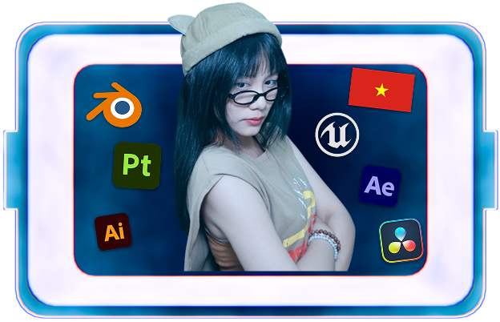
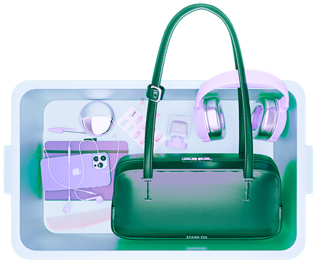
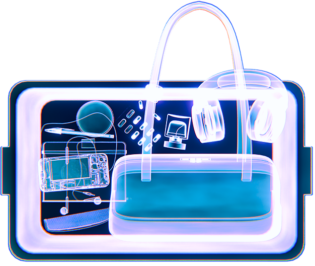
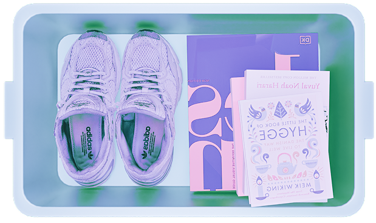

hi, i’m bettyj - a 3d environment artist based in ho chi minh city, vietnam.
i’m a design student at rmit vietnam with more than 2 years of experiences in 3d design and digital arts.
the things i carry, create, and get inspired by.
headphones + earphones
life sounds better with music.
diary / sketchbook
i write or sketch whenever inspiration hits.
fragrance
a little obsessed with smelling good.
convex mirror
for absolutely no reason.
i just like looking.
i love reading books and keeping a diary. these hobbies help me stay calm, focused, and creative.
i’m also passionate about dancing, especially house and k-pop. dancing helps me express myself and let my imagination soar through digital art.
scroll